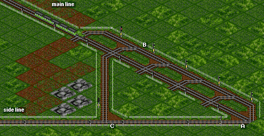

Review PSG 89
Though already finished few days ago, I’d like to cast a brief view back on Public server game 89. It was a special game in the respect that it featured several advanced or new features like shift main line (SML), variable length priorities (var TL prio) or Mark’s recently develloped train length sorters (TL sorter). It featured a rectangular 1024 x 512 tiles sub-arctic map which allowed for ample space to build a decent plan and test and implement it.
The plan
Chosen was the “Olympic plan”, a Cargo Concept - style plan. The initial ML layout consisted of five intersecting one-way R_R circles, only the central one with two-way tracks. Train length was five for primary and seven tiles for secondary.
[Plan of psg89]
The olympic rings as network plan. It proved big fun to jointly devellop this plan
Using SML-style all over the network proved handy later on when parts of the network needed additional ML due to heavy traffic; SML allows for very easy extension of ML as SLHs get very easy to extend. Overall the network proved quite fluent up to a train count of over 800 trains as long as there were no queues jamming stations due to a too high count of pickup trains - which at some point obviously were bought to rise train numbers.
![[Plan of psg89]](https://web.archive.org/web/2/http://www.openttdcoop.org/blog/files/pictures/psg89_plan.png){kind=link}
Trainlength sorting
Using different TL for primary and secondary trains allowed to take advantage of the benefits of Mark’s newly develloped train length sorter. It allows for the construction of a single station for the secondary industries like refinery, food processing and paper mill as it allows to direct trains to different station parts. Thus despite maintaining one station, parts remain reserved for pickup or drop only, avoiding congestion.
[train length sorter for TL5 and TL7]
Train length sorter for TL5 and TL7: Trains arrive at point (A) and travel South. A TL 7 train will block the combo signal at (C) and proceed the track labeld “TL7″. A TL 5 train will not block it and choose the TL 5 track as it avoids the penalty on the TL7 track. The main point here is to assure that a following 2nd train under no circumstances enters the sorter before the engine of the first has passed the exit signal of it.
![[train length sorter for TL5 and TL7]](https://web.archive.org/web/2/http://www.openttdcoop.org/blog/files/pictures/tl_sorting.png){kind=link}
variable train length prio
Using SML style hubs and two destinct train length called for an improvement so that the SML don’t block, if a short (TL5) train is waiting in the shift. This can also generally be a nice feature in networks with variable train lengths

There are cases where the gap between two consecutive trains on the ML is large enough to fit a short train, but not a long train. In the example a train with TL > 5 will trigger the combo signal between B and C and thus the prio will have its full length. Trains with TL 5 or shorter will leave the combo signal between B and C green (when approaching A) so that only the short prio length (between points A and B) applies.
Conclusion
This game was in my eyes a very interesting one and the network proved - up to approx 800 trains - quite robust. Beyond that it reached its limits. The main point in my eyes though, the test of the train length sorter, worked out - after some learning curve - quite well. The same holds true for the variable train length prio. Overall it was great enjoyment, especially also as people adhered quite well to the building rules, to the plan and abstained from using quick and dirty hacks. Last but not least I’d like to thank Kolbur whom I develloped this plan with jointly. Planning jointly is an experience which I can recommend others to try, too.
Categories: Community News, Development, Public Server
tneo April 22, 2008 8:33 pm
Nice blog.